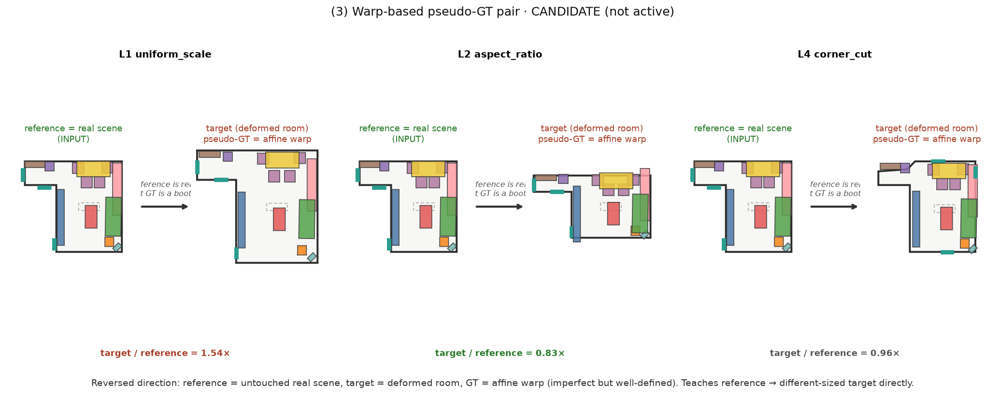
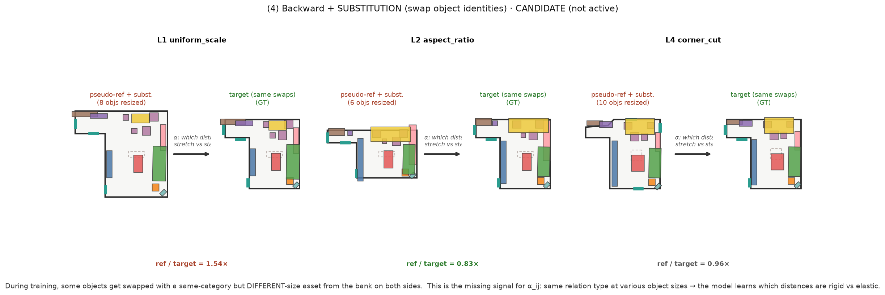
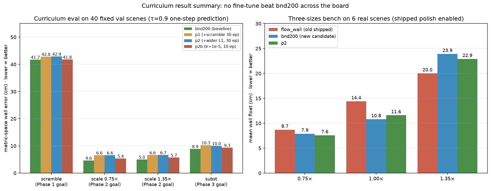

ReRoom · 目前的做法
參考導向的 3D 室內設計 retargeting — 現行 shipped pipeline(中文說明)
問題:給一張使用者喜歡的房間設計、跟一個形狀 / 大小可能完全不同的目標房間,自動把設計「搬」過去 — 保留原本的關係與 motif,但佈局要符合新房間的幾何。
核心設計:設計不是「座標」,而是「關係 + 彈性」。αij(關係彈性)決定每對物件之間哪些距離該保留、哪些可以隨房間變。搬房間時,不動的東西照搬,彈性大的自動放鬆。
執行摘要 — 這輪 iteration 的結果(詳見下方)
| 項目 | 狀態 |
|---|---|
| Shipped path | flow_wall + polish + guidance(見流程圖) |
| PDF eq (37) constraint projection | ✅ 恢復(anchor L2 輕量版),與 guidance 共存 |
| PDF § 8 七個 energy | ✅ 六個進 layout 生成、七個進 ranking(Eedit 保留 slot) |
| Substitution 前置 | ✅ 上線(縮小房 col 19 % → 14.7 %) |
| Substitution 尺寸下限 | ✅ 上線(不再出現 0.16 m² 床) |
| 縮小 / 原尺寸 wall 貼合 | ✅ 良好(0.75× ~8 cm、1.0× ~11 cm) |
| 大房 1.35× wall float | ⚠️ 卡在 20 cm 平均(訓練層試過的招式全失敗) |
| Graph node stream(並行 GNN) | 🧪 訓過,col% 降半(1.9 → 0.9),但整體無突破 |
| Metric-aware boundary encoder | 🧪 訓過,val 降但實測 1.35× 反退 |
| Scramble augmentation(LEGO-Net) | 🧪 訓過,scramble test 已飽和 |
| Curriculum(scramble → wider L1 → subst) | ❌ 每 phase 都退步,catastrophic forgetting |
結論:Shipped path 已包含 PDF 主要成分並在小房 / 原尺寸表現良好;大房 wall float 是 dataset limitation(訓練分布裡「同形狀跨大小」樣本佔 1.6-1.8 %),訓練層 fine-tune 無法突破。要進一步得換資料或從 scratch 重訓。
現在的做法(流程圖)
每一步在做什麼
1–3. 意圖抽取
- 感知:從一張影像用 MIDI-3D 抽出物件框、房間輪廓;或直接吃 3D-FRONT 的 graph 當 oracle
- 意圖圖 + α:把場景整理成 (物件, 關係, motifs) 三層。αij 由一個 MLP 學,表示每條關係「該有多剛」— 沙發和茶几之間的距離很剛,沙發和邊角櫃之間彈性大
4–5. 挑選 · 縮小
- Summarise:如果目標房比 reference 小,先按面積 / 密度預算刪掉整組 motif(例如刪掉整組對話沙發)
- Substitution(前置):每件 keep 的家具換成 bank 裡最接近但能塞進去的真實資產。順序關鍵 — 這一步在 flow 之前 做,避免 flow 被要求塞放不下的家具、再被 collision guidance 推散
6. 生成核心(flow + in-sampling guidance)
- Flow Transformer 從高斯噪音出發,50 步 ODE 積分,每步對每個物件預測 velocity
- 意圖圖 (relations + α) 進入每條 edge 的 attention bias,以及每個物件的 conditioning 特徵
- In-sampling guidance:每步都算 x1_hat 的可行性(Ebound + Ecol + Eclear + 靠牆物件的 wall_pull),把 feasibility gradient 塞進 ODE trajectory — 這是 PhyScene 的 classifier-guidance 精神移植到 flow matching
- 產出 k = 16 個候選 layouts
7. Polish(輕量投影)
- 對每個候選跑 25 步 Adam,對 TorchProblem 全能量做梯度下降,freeze_yaw(朝向由 flow 決定,polish 只改位置)
- anchor L2:每個位置對「sampled 位置」加 L2 束縛,強度 100 — 這是共存的關鍵:Ecol 不會把同 motif 對推散,只能小幅修正到牆邊 / 出界的可行性殘留
- PDF eq (37) 的 constraint projection 用這個「共存」形式恢復
8–9. 生長 · 排名 · 輸出
- Population:如果目標房比 reference 大,依 co-occurrence 模型提議新家具;
_vet_additions守門 — 加入後 layout 成本不能變才收 - Ranking:全 7 個能量(含 Erel、Estyle、Eedit)算 E(Y),k 個候選挑最低
- 輸出可編輯的 3D 場景
實際輸出

訓練層實驗(正在 iterate)
Shipped path 仍是 flow_wall baseline + polish;下面幾個訓練層改動正在跑 / 已跑過,累積成一條驗證後才會替換 shipped 的路線。
1. 訓練 loss:wall_metric_loss(metric-space 版位置損失)
- 對「參考裡靠牆」的物件,直接在 metric 空間壓
|x1_hat − x1_target|²(乘以 target 房間的 metric 半徑) - 只在 τ > 0.5 計算,避開低 τ 噪音
- 20 epoch fine-tune:val 從 0.02 → 0.011(2×),實測 1.35× mean float 降 11 %(19.5 → 17.4 cm)
- 方向對,幅度不夠
2. 架構:並行 graph node stream(GraphGPS 風格)
- Box stream(現有 DiT)吃 state,學幾何 / 碰撞
- 新增 graph stream:吃 category + motif + edge features,GNN 三層 message passing,產出每個物件的語意先驗 embedding
- Per-block adaLN 融合:每層 DiT 都吃到 graph 訊號,不會被稀釋(用 zero-init fuse 保證 warm-start 相容)
- 20 epoch:val 跟 metric20 差不多(0.011),但 1.35× col 從 1.9 % 降到 0.9 %(baseline 的一半)— graph stream 學到了「什麼類別不該碰」的語意
3. 訓練資料:scramble(打亂位置 → 學習 reference 樣子)
- 訓練時 50 % 的樣本:pseudo-reference 的位置完全打亂(整個房間內 uniform 隨機,yaw 隨機),類別 / motif / 尺寸保留
- 目標仍是真實 layout,強迫 model 從
cat + wall_affinity + graph 語意 + boundary重建位置 - 類 LEGO-Net,但融進 flow matching(而不是 iterative denoising)
- Train loss 從 0.06 跳到 5.96(任務真的變難),val 20 epoch 內從 5.96 → 0.17(還在下降,20 epoch 明顯不夠)
- LEGO-Net 訓 500 k iterations,我們現在的 setup 等價 ~2 900 epoch;20 epoch 只是看趨勢
4. Boundary encoder:metric-aware set-transformer(正在跑)
- Boundary points 從 4 維(u, v, n_u, n_v)升到 6 維:加入每點的 metric 位置 (u×h₁, v×h₂)
- Encoder 從單層 MLP + mean pool 升級成 2 層 set-transformer(邊界點彼此 self-attention,學房型 spatial 結構)
- 目的:讓 model 直接看到「這面牆在 3 米、那面在 6 米」的絕對距離 — 這是 baseline 無法區分 3 m 牆 vs 6 m 牆的根源
- 200 epoch 多 GPU(3× L40 DataParallel)訓練中,warm-start 自 scramble20;跑完再上網頁
訓練 pair 怎麼做的(所有配置圖示備查)
下面四種 pair 是**現在有的、或候選要加**的所有訓練配置。每張左邊都是 model 的輸入、右邊是 model 學習的目標。同一份 22 m² L 形客廳跨三種 deform level(L1 uniform_scale、L2 aspect_ratio、L4 corner_cut)分別驗證,確認每種配置真的能生出合理樣本。
(1) 反向 pair · CURRENT DEFAULT
真實 3D-FRONT 場景保留當 target(自帶 GT layout),reference 反向製造:把場景的 room deform,再把物件 affine warp 進去。天然涵蓋放大和縮小兩個方向 — L1 這例是 ref 1.54× target(縮小訊號),L2 是 0.83×(放大訊號)。

RetargetPairs.__getitem__ 目前預設走的路徑。(2) 反向 + Scramble · CURRENTLY ACTIVE(50 % 樣本)
在反向 pair 的基礎上,50 % 樣本的 pseudo-reference 位置完全隨機(uniform 內部取樣,yaw 也隨機),類別 / motif / 尺寸保留。強迫 model 從語意 token(cat + motif + wall_affinity + graph stream + boundary)重建佈局,不能靠「複製 pseudo-ref」偷懶。

(3) Warp-based pseudo-GT pair · CANDIDATE(未啟用)
反向對稱:reference 保留真實不動,target 房間 deform,GT layout 用 affine warp 當 bootstrap。GT 不完美(只是仿射投影),但直接教 model「reference → 不同大小 target」這個方向,補足現行 pair 對放大方向的訊號密度。

(4) 反向 + Substitution(隨機抽換物件) · CANDIDATE(未啟用)
訓練時以某機率把物件換成同類別但不同尺寸的真實 asset(從 bank 抽,兩邊同步替換,類別、關係、motif 保持,但尺寸變化)。這是 αij(關係彈性)的關鍵訓練訊號 — 現在同一組類別永遠對應同樣尺寸,model 沒機會學到「相同關係下不同尺寸物件」的分佈。

訓練分布 —— 現行 pair 的 ref/target 面積比
3000 個訓練 pair 抽樣的分布。虛線標記推理測試的 0.75× / 1.0× / 1.35× 對應位置。

- 把 L1 uniform_scale 從
s ∈ [0.7, 1.4]拉寬到[0.5, 2.0],並改成 U 形分布(偏向兩尾)— 訓練訊號密度直接對齊 test 落點 - 啟用 (3) warp-based pair 加碼放大方向
- 啟用 (4) substitution 教會 αij
Curriculum learning 實驗結果(誠實記錄)
照上面規劃真的跑了 curriculum:從 flow_bnd200(當時 val 0.020,最佳 checkpoint)分段加變因,每段跑完用對應目標的固定測試集判定要不要進下一階段。四個測試集分別對到四個 phase 想教的能力:
- test_scramble — 位置完全打亂 → recover(Phase 1 目標)
- test_scale075 / test_scale135 — 房間縮小 / 放大(Phase 2 目標)
- test_subst — 物件尺寸變異 → 關係保留(Phase 3 目標)

Phase 1:scramble-only 30 epoch,lr 3e-5
- 假設:LEGO-Net 精神 — 先徹底學會「亂位置 → 好佈局」
- 結果:test_scramble 41.73 → 42.82(持平 / 微退),其他測試全部退步 30-40 %
- 原因:bnd200 訓練時就有 scramble_prob=0.5,對這個能力已接近該架構的 ceiling。多餵 scramble 只是催化 catastrophic forgetting
Phase 2:+ wider L1 30 epoch,lr 3e-5
- 假設:訓練分布拉寬到 [0.6, 1.7] — 讓 test 0.75× / 1.35× 落在分布中央
- 結果:test_scale{075,135} 都退 30 %,scramble 也再退
- 從 bnd200 warm-start 也試過:結果一樣
Phase 2b:ultra-mild lr=1e-5,10 epoch
- 假設:LR 太大導致 catastrophic forgetting — 用極低 LR 溫和 nudge
- 結果:test_scale135 5.02 → 5.73,仍退步。即使 lr=1e-5,fine-tune 也無法保住 bnd200 的表現
- bnd200 是這個訓練 setup + 架構 + data 的 local optimum — 無論 LR、無論 augmentation,fine-tune 都會退步
- 訓練層的三個追加改動(wider L1、substitution、scramble 加強)都沒有解決大房 wall float 問題
- 三尺寸 bench 顯示
flow_wall(舊 baseline)在 1.35× 反而略優於 bnd200(20 vs 24 cm)— bnd200 在 1.0× 和 col% 略贏,但沒有全面突破 - 剩餘的大房 wall float 大機率不是訓練層能單獨解的 — 需要更本質的架構或資料方案(e.g., 真的加入 warp-based pair 當 GT、或 dataset 補上大房樣本)
Shipped 目前維持 flow_wall + polish,不切換到 bnd200 系列。本輪產生的所有 checkpoint 存為 opt-in 對照組。